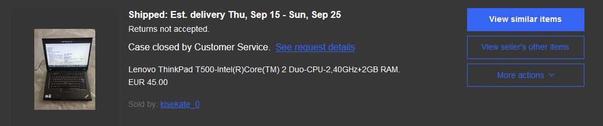
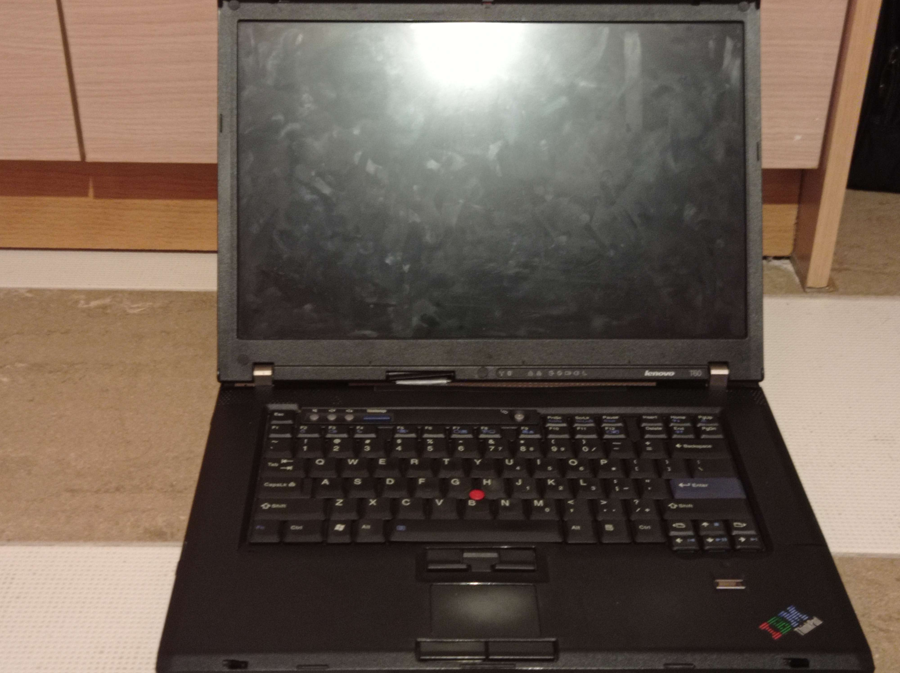

You probably think getting a libre machine is easy.
You just go on eBay and get something cheap like a T60 or X60.
But for me it was torture.
In Greece there are no used computer shops, that I know of at least.
At first I ordered a T500 on eBay for 50€
But the issue is, it never arrived.

Next I found an R500 for 45€ from a local seller.
When I sent them a message they told me it had been sold already, but they did have a T60.
I specified I need an intel GPU in my T60 as the ATI VGABIOS is non-free.
They didn't seem to understand as my T60 came with an ATI X1400.
I corebooted it, and now I use it as a server.

Finally on eBay I found an X60S, it can be turned fully free no matter the model.
It has no RAM and no Hard Disk, thankfully I had some compatible RAM and a Hard Disk around.
Only real issue is that the screen is half broken, but that doesn't matter to me because I use external monitors.
One thing I'm not the biggest fan of about the X60S is that it has a 32-bit Core Duo L2400, while my T60 has a 64-bit Core2 Duo T7200.
And my first thought was "I can just replace the CPU" but the X60S has the CPU soldered onto the motherboard, making it impossible to upgrade CPU.
I don't really care about the CPU, as the L2400 is just a bit slower than the T7200, but most FSF-Approved GNU/Linux Distributions don't support 32-bit processors.